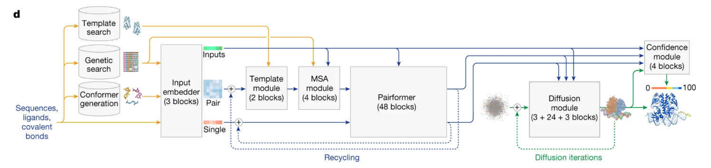
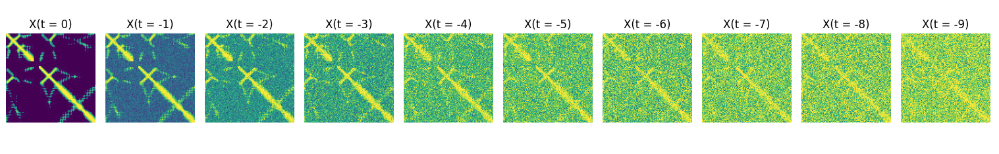
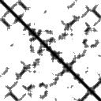
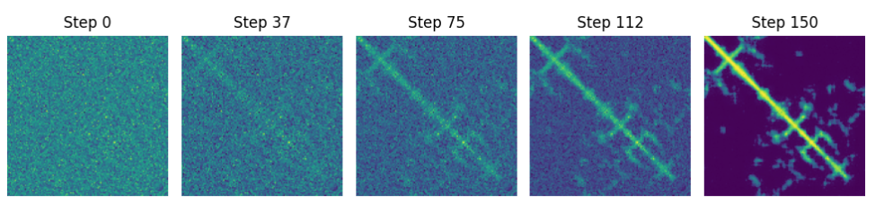
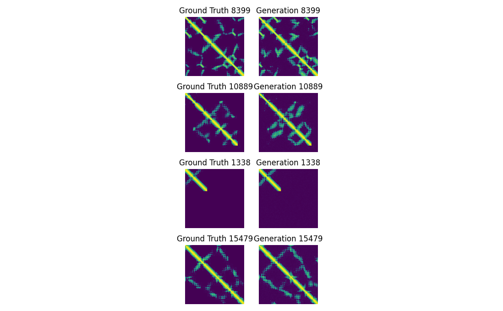

11 Integrated protein diffusion language models
Abstract
In this chapter, we’ll discuss AlphaFold3 and its joint sequence (language model like) & diffusion (Image generation model like) architecture. But because AF3 is a truly complex model, we’ll use a far simpler protein contact diffusion model, guided by a protein language model.
In doing so we’ll cover and study three core deep learning concepts, 1. denoising diffusion, 2. cross-attentions and 3. sequence guided diffusion (the actual link between sequences and 2D or 3D representations of molecules). The code used for this chapter is found here: https://github.com/MichelNivard/Biological-language-models/tree/main/scripts/Proteins/Chapter11
11.1 Alphafold3
Alphafold3(Abramson et al. 2024a) has what initially looks like a very complex architecture (See Figure 1), at least it did to me for the longest time.

One important new aspect to the architecture is the “Diffusion module” on the bottom right. It has 3 inputs, the results from three other model elements feed into it (blue paths) and a weird little point cloud. The actual architecture of AF3 is really remarkably complex, I feel in no way competent to teach it. One of the best overviews I saw is a blog post by Elena Simon & Jake Silberg. Like AF2 before it, AF3 is a model that imposes evolutionarily sensible (the multiple sequence alignments) and geometric (triangle rules) constraints that mean their models are tailored/specific/supervised/slower but often better than pure protein language models (at the expense of speed and efficiency).
Because I can’t do the full complexity of AF3 justice, but I think I can get people up to speed on how you’d begin to think about bridging protein sequence models, and 2D and 3D representation of proteins, we are going to train a protein diffusion model, that is guided by the inputs with a generic protein language model (EvolutionaryScale/esmc-300m-2024-12 to be precise, ESM2’s successor) and attaches a diffusion model to it.
Now since I don’t have the compute that Google DeepMind has (and neither do you…), we’ll train a 2D diffusion model that, guided by a pre-existing protein language model, generates protein contact maps. The reason to again work on predicting contact maps is that 1. the image-like illustrations contact maps are help me effectively convey the concept of diffusion and 2. abstracting away the highly effective MSA and physics-based architecture in AF3 lets me focus on something fairly profound (I think): cross-attention. To my simple statistics/numerically minded brain, the fact that through encoding and attention we can capture the correlations between sequences of tokens is already a huge leap. When I think about how to capture two entirely separate (but related) modalities, a sequence of tokenized amino acids, and the 3-D (or 2D) structure of the molecule, my brain breaks a little. Cross-attention is how ChatGPT can relate your written command (“make a picture of a dog strapped to the roof of Mitt Romney’s car, in the style of Studio Ghibli”) and produce an image of just that scene, to the incredible annoyance and in some cases despair of artists who’s work they pirated for that! Fortunately for us, in Genomics, the data is actually in the public domain! and so there are no moral compromises to what we are about to do in that respect!
11.2 Diffusion models
Gaussian Denoising Diffusion models are a very flexible, and ingenious, class of deep learning models for images. Architectures derived from diffusion models are the conceptual basis for all kinds of famous image generation models, like the one integrated into ChatGPT or other image generation AI models.
Diffusion models have two parts, a forward process, which is defined, or fixed, and a reverse process which takes the form of a neural network and which is learned. The forward process takes training images (in our case of protein distance maps) and adds sequentially more noise (See Figure 2).
The relation between the image (x) at time t, and t-1 is:
\[ X_{t-1} = b_0 * X_{t} + b_1 * \mathcal{N}(\mu,\sigma) \]
Where \(b_0\) and \(b_1\) are parameterized in a clever way, such that they 1. depend on t alone and 2. the variance of the total image stays the same, or is controlled. This means that we don’t have to store/create all $X_{t-1} $ images but can reconstruct them from t and the input image \(X_0\). For a specific protein contact map ( \(X_0\) )the “noising” sequence might look a little like figure 2.

A diffusion model uses the, and the value of \(t\) to learn to “denoise” the image. It doesn’t denoise the image all at once though, it trains to denoise from t=500 to t=499, and t=150 to t=149 etc etc. During training, the images are embedded with their specific timestep \(t\) such that the reverse diffusion model (generally a U-Net architecture) can learn weights that are able to optimally estimate (and the subtract) the noise for. given image at time step t.
11.2.1 Diffusion reverse model architecture
Each “down block” in a diffusion U-Net starts with a normalization layer, which helps keep the model stable during training by making sure the numbers flowing through the network stay within a reasonable range. Then comes an activation function, like Swish or GELU, which adds flexibility to the model and helps it learn more complex patterns. The core part of the block is a Conv2D layer, which looks at small squares of pixels (like 3×3 patches) and learns to summarize what’s in them—kind of like learning to detect edges, textures, or other useful features. A special trick used in diffusion models is the time embedding, which tells the model what step of the denoising process it’s on. This time information is turned into numbers and added to the features in the block so the model can behave differently at each step.
After the main part of the down block, there’s a downsampling layer that reduces the size of the image (usually by half) so the next layer can focus on a broader view of the picture. This is often done with a strided convolution, which skips over pixels to shrink the height and width while keeping the most important features. Skip connections pass the feature maps from each downsampling stage directly to the matching upsampling stage on the other side of the U. This helps the model keep important details that might be lost during compression, allowing the decoder to reconstruct sharper and more accurate outputs. The goal of downsampling the image is to tend to the same image at different scales, the fine detail in the early layers, the more global structure in the later layers. In the case of protein contact maps, the early layers tend to the secondary structure: local spatial conformation of the polypeptide backbone, helices, sheets, and loops.
In the middle of the U-Net, after the deepest downsampling layer, there’s often a self-attention block. This layer helps the model understand global relationships in the image — for example, connecting far-apart pixels that should be related (like opposite ends of a stripe or outline). Since it operates at the most compressed resolution, it’s efficient but powerful, and it benefits from the time embedding just like the ResBlocks. In the context of protein contact diffusion models, the attention learns aspects of the tertiary protein structure.
Up blocks in a diffusion U-Net are the mirror of the down blocks—they take the compressed features and gradually rebuild the image to its original size. Each up block typically starts by upsampling the feature map, usually with a transpose convolution or nearest-neighbor interpolation followed by a Conv2D, which increases the height and width (often doubling them). After upsampling, the block combines the upsampled features with the skip connection from the matching down block, so it has both high-level context and fine details. It then passes this combined input through one or more ResBlocks, just like in the encoder, using normalization, activation, convolutions, and time embedding again to refine the reconstruction.
At the start, the scalar timestep t is turned into a high-dimensional vector using a sinusoidal position embedding, and then passed through a small MLP (multi-layer perceptron) to create a learned time embedding. This embedding is then injected into nearly every ResBlock in the model — both in the down blocks, up blocks, and middle blocks. Inside each ResBlock, the time embedding is added (broadcasted) to the feature map after a linear layer transforms it to match the number of channels. This allows every part of the network to be conditioned on how much noise it should expect and how aggressively to denoise.
11.2.2 Diffusion model for contact maps
As a training set, I build 7000 contact maps, based on experimentally validated proteins in the CASP12 set I obtained from the SideChainNet dataset (King and Koes 2021). I do not build strictly binary contact maps, but build images that reflect 9 distances thresholds (see Figure 3 for an example entry from the training set).
Here are 2 functions I used to make contact/distance maps and then crop those to 128x 128 pixels.
# === FUNCTIONS ===
def make_contact_map(coords, binary=False, threshold=8.0):
"""
Computes a contact or distance map from 3D Cα coordinates.
Args:
coords (np.ndarray): Shape (L, 3) or (L, A, 3), 3D coordinates.
binary (bool): Whether to return binary contact map.
threshold (float): Å distance cutoff for binary maps.
clip_dist (float): Max distance for clipping and scaling.
Returns:
np.ndarray: (L, L) contact or scaled distance map in uint8.
"""
# extract only Cα coordinates (atom 0 for each residue)
ca_coords = coords[:, 0, :] # shape (L, 3)
n_residues = ca_coords.shape[0]
n_missing = np.isnan(ca_coords).any(axis=1).sum()
frac_missing = n_missing / n_residues
if frac_missing > 0.10:
print(f"{protein_id} skipped: {n_missing}/{n_residues} Cα coords missing ({frac_missing:.1%})")
return None
if np.unique(ca_coords, axis=0).shape[0] <= 1:
print(f"{protein_id} skipped: collapsed structure (identical Cα)")
return None
if n_residues < 10:
print(f"{protein_id} skipped: too short ({n_residues} residues)")
return None
# normalize based on first Cα
ca_coords -= ca_coords[0] # shift so residue 0 is at (0, 0, 0)
# compute pairwise distance matrix
dists = np.linalg.norm(ca_coords[:, None, :] - ca_coords[None, :, :], axis=-1)
if binary:
contact_map = (dists < threshold).astype(np.uint8) * 255
return contact_map
else:
levels = [0,20,40,60,80,100,120,140,160,180]
contact_map = np.zeros_like(dists, dtype=np.uint8) + 255
# Bin 0: d < threshold - 3
mask = dists < (threshold - 3)
contact_map[mask] = levels[0]
# Bins 1 to 9: 1Å slices
for i in range(1, 9):
lower = threshold - 5 + (i)
upper = lower + 1
mask = (dists >= lower) & (dists < upper)
contact_map[mask] = levels[i]
return contact_map
# Or simply crop the first 128 amino-acids (Ca atoms associated with those amino-acids)
def crop_contact_map(contact_map, crop_size=128, pad_value=255, min_size=20):
"""
Crop the top-left corner of the contact map to (crop_size, crop_size).
Pads with `pad_value` if the map is smaller.
Skips maps smaller than `min_size`.
"""
h, w = contact_map.shape
if h < min_size or w < min_size:
raise ValueError(f"Contact map too small: {h}x{w} (min required: {min_size})")
canvas = np.full((crop_size, crop_size), pad_value, dtype=np.uint8)
crop_h = min(h, crop_size)
crop_w = min(w, crop_size)
canvas[:crop_h, :crop_w] = contact_map[:crop_h, :crop_w]
return Image.fromarray(canvas)Then using the sidechainnet package, I download protein information, save the contact maps as images using the following function:
# === MAIN ===
print("Loading SideChainNet CASP12 dataset...")
data = scn.load(casp_version=12)
print("Generating contact maps...")
for i, sample in enumerate(data):
try:
protein_id = sample.id
coords = sample.coords # shape: (L, A, 3)
if coords is None or coords.shape[0] < 2:
continue
# Compute distance matrix and preprocess
distance_map = make_contact_map(coords, binary=False)
# Skip if it's completely empty
if np.all(distance_map == 255):
print(f"Skipping {protein_id}: distance map is all white")
continue
# Make the final image
img = crop_contact_map(distance_map, crop_size=128,pad_value=255)
img.save(os.path.join(output_dir, f"{protein_id}.jpg"), format='JPEG')
if i % 100 == 0:
print(f"[{i}] Saved: {protein_id}.jpg")
except Exception as e:
print(f"Skipping {sample.id} due to error: {e}")
print(" Done.")This generates a folder with thousands of images of contact maps, where the specific shade of gray of the pixel corresponds to <4 (black), 5, 6, 7, 8, 9, 10, 11, 12, or >13 (white) Angstrom distances.

11.2.2.1 Detailed Parameter Breakdown by Module for our model
The table below breaks down the different elements of the U-Net architecture of a tiny diffusion model I trained. The table describes how many free parameters each part of the model contains. As you can see, the decoder ups part of the model has almost half of the parameters. This is where the encoded information, and the skip connections are brought together. You’ll also note the most number of parameters in the time_mlp, which encodes the influence of the specific timestep t. It’s important to realize that the ResBlocks (both in the encoder and decoder) also contain parameters that map the time-specific embedding to the image information. These regulate how the time information influences image generation at each specific stage.
| Module | Parameters | Description |
|---|---|---|
ups |
19,832,768 | Upsampling path (decoder): progressively reconstructs the denoised image from compressed features. Includes ResBlocks, upsampling (e.g. transposed convolutions), and skip connections from encoder layers. |
downs |
5,402,816 | Downsampling path (encoder): extracts hierarchical features from the noisy input image using stacked ResBlocks and downsampling layers. |
mid_block1 |
4,983,808 | First bottleneck ResBlock: processes the most compressed latent representation of the input, directly before/after the attention block. |
mid_block2 |
4,983,808 | Second bottleneck ResBlock: further transforms latent features after attention at the bottleneck. Acts as a transition before decoding. |
mid_attn |
264,192 | Self-attention at bottleneck: captures global spatial dependencies in the most compressed feature map, enabling long-range interactions. |
final_res_block |
152,000 | Final ResBlock before output: fuses decoder output and prepares it for the final convolution. Often used to refine the final image prediction. |
time_mlp |
82,432 | Timestep embedding network: converts scalar timestep into a vector that conditions all ResBlocks, allowing the model to denoise appropriately for each diffusion step. |
init_conv |
3,200 | Initial input convolution: expands the input image from 1 channel to base feature dimension (dim=64), preparing it for downstream processing. |
final_conv |
65 | Final output convolution: projects the final hidden features back to 1 channel to match the original image shape. Predicts either noise (ε_t) or clean image (x₀). |
Once we’ve trained the diffusion model for about 40/60 minutes (though ideally longer and on way more data!) we can sample from it. Sampling from it involves sampling pure Gaussian noise (“t - 999”) and passing the noise through the diffusion model a few hundred times (each time updating t). There are speedups and tricks that mean you won’t have to pass it through the model 1000 times to get a solid result, though more passes (“steps”) generally means a better result. Because protein contact maps are symmetric, but the model doesn’t know that, I generate a protein but then copy over one of the two halves. In Figure 3 I show a particularly convincing-looking sample at 5 steps from noise to final protein contact map.

The protein contact map sampled in Figure 3 is a fiction that, according to the model, fits the distribution of the training data, which while fascinating isn’t very useful yet. To make things useful, we must condition the model on not just timestep, but also on condensed, or embedded sequence information.
The next step is to condition the generation of a diffusion model on the amino-acid sequence. This is a very specific multi-modal problem, we want to create an image, based on a sequence of tokens. In order to wrap our head around.
11.3 From attention, to cross-attention
In Chapter 10 we discussed the attention mechanism, where each token in a sequence is embedded in \(X\), looks at all other tokens in the same sequence—we can explore something more general: cross-attention. Cross-attention (See Figure below) is what allows models to link different modalities together. It is how an image can learn to attend to words, or how a protein contact map can align with an amino acid sequence.
In technical terms, self-attention happens when the Query, Key, and Value matrices—\(Q\), \(K\), and \(V\)—are all derived from the same input. Cross-attention, on the other hand, involves two different sources. One stream generates the queries, \(Q_{nxd}\), where n is the number of tokens in the query source (e.g., the contact map image), and \(d_q\) is the learned query dimensionality. The other stream produces the keys \(K_{mxd}\) and values \(K_{mxd}\), where \(m\) is the number of tokens in the key/value source (e.g., the sequence). In this setup, the queries are essentially asking, “Where in the other modality is the most relevant information for me?”
Here’s where it gets interesting: even though the inputs—say, a 2D contact map versus a 1D amino acid sequence—might have vastly different shapes and lengths (n ≠ m), attention still works because we project both inputs into a shared space using learned linear transformations. The only requirement is that the inner dimensions match appropriately: the dot product QKᵗ yields an attention score matrix \(A_{nxm}\), which tells each query vector how much to attend to each key. After applying softmax to these scores, the attention weights are used to compute a weighted sum of the values \(V\), resulting in the final output \(Z_{n*d}\).
So, while the original modalities might differ wildly in format and token count, cross-attention does not require the inputs to be the same size—only that their projections align where it matters: in the shared attention dimensions \(d_q\) and \(d_v\).
In our case, when we say the contact map diffusion model attends to the sequence, we mean the image features are used to generate queries, and the sequence provides the keys and values, the final output dimensions are consistent with those of the diffusion model. This lets the contact map image learn where in the sequence there are features that are most relevant to its shape. That might sound abstract, but think of it as one set of data (the image) trying to find the most useful context from another (the sequence).
This mechanism is central in multimodal transformers like text to image, speech to text, or many others. It is increasingly being used in biological modeling too. It enables not just learning within a sequence, but learning between representations—and that’s a big leap.
11.4 Cross attention and a diffusion model.
Google’s ‘imagen’ architecture implements a diffusion model, which uses cross attention to attend to the final embeddings of a text model. The great news to us is that the ‘imagen’ paper actually showed you don’t really need to train the “text” part of the model with this specific goal in mind, you can just use an existing model! And that is what we are going to do. We are going to use facebook/esm2_t30_150M_UR50D which is an evolution of the Facebook-funded ESM-2 models, to compute embeddings for all CASP 12 proteins, and train a diffusion model conditioned on the image embedding. Recall how U-net diffusion models are already conditioned on the time t1 embedding, we are simply going to also condition specific steps in the U-net on the sequence model embedding. As we know from Chapter 10 sequence models do learn latent representations of contact maps, we are going to leverage that information when running the diffusion process.
I use the script below to download the amino-acid sequences for proteins in the sidechainnet dataset, run the facebook/esm2_t30_150M_UR50D model on these proteins, and save the per amino-acid embeddings generated by the last layer. These embeddings, unlike the input embeddings, are the contextualized (their passed through attention blocks across many layers) embedding of each amino-acid in its context. The output is a 128 by 640 (embedding dimension for this model) matrix that is a numerical representation of the protein according to the facebook/esm2_t30_150M_UR50D model. This is a quite resource-intensive process, so I added code to make sure it only computes embeddings for proteins for which we are able to generate a solid contact map (one without too many missing data points for example).
=== embedding_extraction.py ===
import os
import torch
import numpy as np
import sidechainnet as scn
from tqdm import tqdm
from transformers import AutoTokenizer, AutoModel
# === PARAMETERS ===
model_name = "facebook/esm2_t30_150M_UR50D"
output_dir = "embeddings_all"
valid_ids_path = "valid_proteins.txt"
os.makedirs(output_dir, exist_ok=True)
# === Load Model ===
device = torch.device("mps" if torch.backends.mps.is_available() else "cuda" if torch.cuda.is_available() else "cpu")
tokenizer = AutoTokenizer.from_pretrained(model_name)
model = AutoModel.from_pretrained(model_name).to(device).eval()
# === embedding_extraction.py ===
os.makedirs(output_dir, exist_ok=True)
# === Load valid protein IDs from contact map step ===
with open(valid_ids_path, "r") as f:
valid_ids = set(line.strip() for line in f if line.strip())
def get_embeddings(sequence):
with torch.no_grad():
inputs = tokenizer(sequence, return_tensors="pt", truncation=True, padding=True)
inputs = {k: v.to(device) for k, v in inputs.items()}
outputs = model(**inputs)
seq_emb = outputs.last_hidden_state[0].cpu().numpy() # (L, D)
seq_len, emb_dim = seq_emb.shape
# Pad to 128 if needed
if seq_len < 128:
pad = np.zeros((128 - seq_len, emb_dim), dtype=np.float32)
seq_emb = np.vstack([seq_emb, pad])
else:
seq_emb = seq_emb[:128]
return seq_emb # shape: (128, D)
def main():
casp_versions = [12]
print(f" Loading SideChainNet CASP datasets: {casp_versions}...")
# Combine all samples
all_samples = []
for casp_version in casp_versions:
data = scn.load(casp_version=casp_version, casp_thinning=70)
all_samples.extend(data)
print(" Extracting embeddings only for valid proteins...")
for sample in tqdm(all_samples):
protein_id = sample.id
if protein_id not in valid_ids:
continue
try:
sequence = sample.sequence
if sequence is None or len(sequence) < 10:
continue
cropped_sequence = sequence[:128]
emb = get_embeddings(cropped_sequence)
np.save(os.path.join(output_dir, f"{protein_id}.npy"), emb)
except Exception as e:
print(f" Skipping {protein_id} due to error: {e}")
print(" Embedding extraction complete.")
if __name__ == "__main__":
main()11.5 Training the imagen model
The high-level library huggingface provides for image models, called diffusion, isn’t as fully developed as their transformers library. Therefore, we’re going to use a library maintained by GitHub user lucidrains who I guess is a scientist in biomedical science but also someone who builds these amazing implementations of AI models from papers. The repo we’ll use is imagen-pythorch which you can just install using pip: pip install imagen-pytorch.
What we’ll effectively end up doing to predict protein contact maps is run a two-model sequence: 1. run a protein language model to transform sequences into embeddings, encoding a lot of information using a pre-trained 150m parameter language model, and 2. use those embeddings, and the contact maps of the same protein to train a ~31 million parameter Unet image generation model, where every so often there is a cross-attention layer where the image attends to the sequence embedding. You can find the full script here, but below we can have a look at the core components, a U-net diffusion model, and an imagen model which contains it.
# === Define U-Nets for Imagen Cascade ===
unet1 = Unet(
dim=64,
cond_dim=embedding_dim,
dim_mults=(1, 2, 4),
channels=1,
num_resnet_blocks=2,
layer_attns=(False, False, True),
layer_cross_attns=(False, True, True),
)
# === Imagen ===
imagen = Imagen(
unets=(unet1),
image_sizes=(128),
timesteps=1000,
cond_drop_prob=0.1,
text_embed_dim=640,
channels=1
).to(device)We’ll have to do a little model work, because we can use Hugging Face’s Trainer library here. Though the repo we use here is still fairly high-level, so it provides a trainer, etc. the data loading process is abstracted away here, but of course, all scripts are available in full on GitHub.
# === ImagenTrainer ===
# Initialize the trainer
trainer = ImagenTrainer(imagen,fp16=True).to(device)
# FIX: Wrap with cond_images_dataset so (cond, image) is handled correctly
trainer.add_train_dataset(train_subset, batch_size=batch_size, shuffle=True, num_workers=0)
trainer.add_valid_dataset(eval_subset, batch_size=batch_size, shuffle=True, num_workers=0)
# set up eval...
eval_losses = [] # store losses for plotting later
eval_every = 100 # steps
steps_per_epoch = len(train_subset) // batch_size
# === Training Loop ===
print(" Starting training...")
for epoch in range(epochs):
total_loss = 0.0
for step in tqdm(range(steps_per_epoch)):
loss1 = trainer.train_step(unet_number=1)
total_loss += loss1
if step % 50 == 0:
print(f"Step {step} | Loss: {loss1:.4f}")
if step % eval_every == 0:
eval_loss = trainer.valid_step(unet_number=1)
eval_losses.append((epoch, step, eval_loss))
print(f" Eval Loss @ Epoch {epoch}, Step {step}: {eval_loss:.4f}")
print(f"[Epoch {epoch + 1}/{epochs}] Loss: {total_loss / steps_per_epoch:.4f}")
if (epoch+1) % 5 == 0:
trainer.save(f"imagen_cont/imagen_protein_epoch{epoch + 1}.pt")
print("Training complete.")A training loop can be fairly simple, especially with great out-of-the-box pre-built models like the one provided by lucidrains. It’s essentially two Python loops, the outer loop loops over epochs, the inner loop over steps. In each inner loop, we’ll take a single training step, computing the derivatives of all parameters wrt the loss over a batch of data, and updating all parameters:
for step in tqdm(range(steps_per_epoch)):
loss1 = trainer.train_step(unet_number=1)This particular training loop still abstracts a fair bit away from the user, in later chapters we’ll likely have to open up that training loop even further. We train the imagen model on 16,000 contact maps and embedded sequences, for 80 epochs (image models need way more epochs than sequence models). After training, the model is able to fairly accurately reconstruct protein contact maps, see Figure 5.

To understand the pros and cons of this model relative to the attention-based protein contact map prediction we performed in Chapter 10, we can do some visual inspection. While these generations on the right are sharp, crisp, and often very accurate, Generation 10889 has some clear “hallucinations”, or contacts that seem very confident and real, but aren’t in the ground truth at all! While if you go back to Figure 2 of Chapter 10 you’d see far more “noisy” error in predictions. Hallucinations are a very pernicious kind of noise, they look clean, convincing, plausible, because the diffusion model just turned some early noise into a very slick processed convincing-looking result, which noise in statistical predictions in the last chapter are far more recognizable as noise!
Alphafold3, and AlphaFold2 before it, had a specific feature to guard against convincing-looking hallucinations. Both models had confidence modules, a neural network that predicts the model’s confidence in each predicted structure/residue. But it also used double conditional diffusion, where the diffusion was conditioned on both the sequence embeddings, and on the embedding of the proteins pair representations (similar to the attention maps we discussed in Chapter 10, a 2D representation of which amino-acids attend to each other).
11.6 Conclussion
So in this chapter we trained, and discussed, a model that is abstraction fo AF3, it is like AF3 int he sense that we use diffusion, conditional on sequence information to estimate a representation of a protein. Obviosluyit is missing all kind of keye part of the AF3 model. in the next chapter we’ll slightly expand our abstraction of AF3. We’ll train diffusion model hat is conditioned on the amino-acid sequence embedding AND on the protein map as predicted based on the 2D presentation of the attention maps.
To prepare, you can try the two self-study assignments below, they pull in things we learned in the last two chapters to basically make protein predictions that adhere to the noisy, but mostly accurate outlines we could generate based on attention maps, and then use diffusion modeling to predict the local details, preventing strong hallucinations. If you’re more of a reader, skip to the next chapter, where I’ll take a stab at these two assignments myself.
Tip
In order from beginner to advanced project, consider these self-study exercises, all of which share a common goal, to see if we can further condition the diffusion model on the noisy but hallucination-free attention-based predictions we made in the last chapter, the hallucinations reduce.
1. (easy) Run contact map prediction like in Chapter 10. That is, extract the attention maps when running facebook/esm2_t30_150M_UR50D for ~20 genes, predict their contact maps with those, store and average the prediction weights and use those to predict contact maps for further proteins in the imagen validation set. Then when sampling from your imagen model, give the attention-based prediction the argument init_image, along with the embeddings. This will start the denoising from the attention-based prediction, you can experiment with skip_steps = xxx because as the model now starts from a prediction, not pure noise, you might want to a portion of the 1000 steps for optimal results
2. (medium) Run contact map prediction like in Chapter 10. That is, extract the attention maps when running facebook/esm2_t30_150M_UR50D for ~20 genes, predict their contact maps with those, store and average the prediction weights and use those to predict contact maps for further proteins in the imagen training set. Then when training your imagen model, give the attention-based prediction the argument cond_images, along with the text embeddings. This will train an imagen model that is conditioned on the faint outlines of the protein structure generated based on the attention maps, which are less likely to be hallucinations.